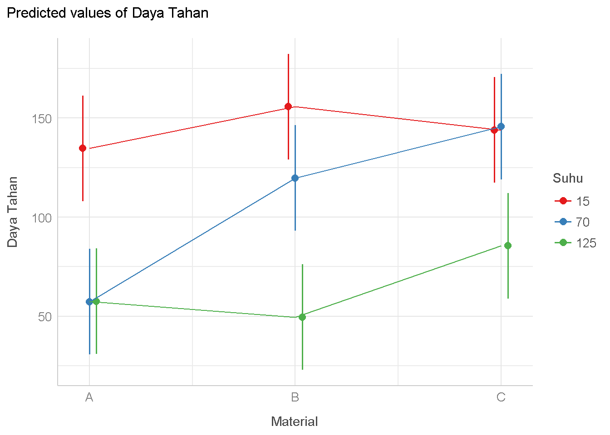
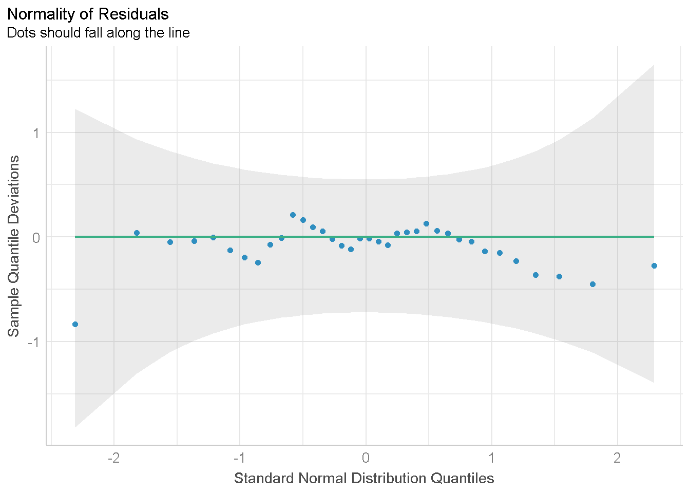
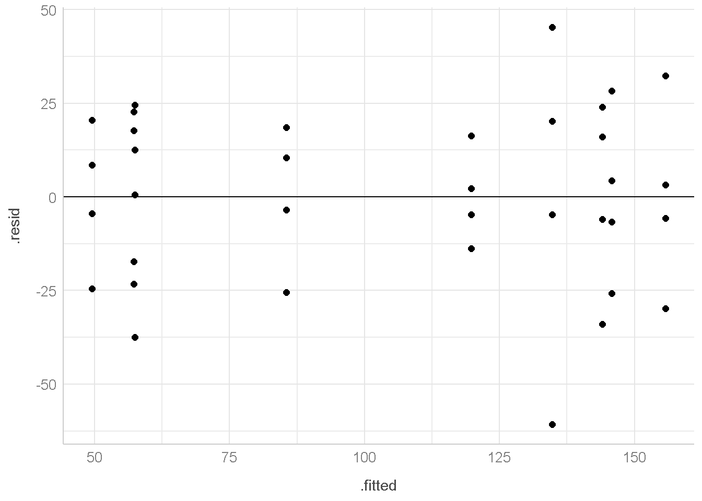
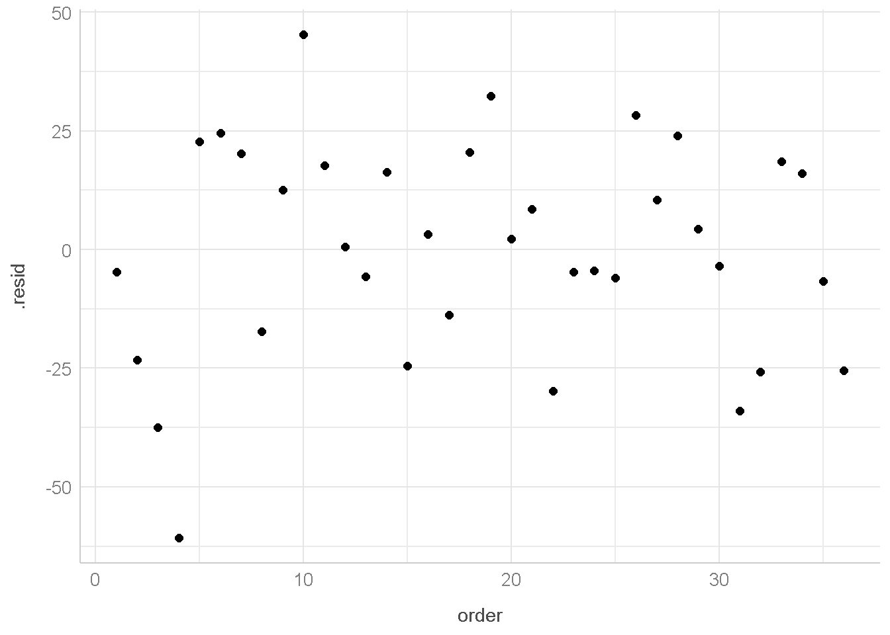

install.packages("tidyverse")
install.packages("broom")
install.packages("performance")
install.packages("see")
install.packages("fbasics")
install.packages("sjplot")
install.packages("ggpubr")
install.packages("DescTools")Analisis Faktorial RAL dengan R
Compare Means
Analysis of Experiments Data
Install package berikut jika belum ada
library(tidyverse)
library(performance)
library(see)
library(sjPlot)
library(broom)
library(ggpubr)
library(DescTools)
library(fBasics)Data
Dari percobaan ini ingin diketahui apakah jenis material dan suhu mempengaruhi daya tahan baterai (dalam jam) ? Apakah jenis material tertentu cocok untuk suhu tertentu? Dari percobaan tersebut diperoleh data daya tahan baterai sebagai berikut:
| Material | Suhu | DayaTahan |
|---|---|---|
| A | 15 | 130 |
| A | 70 | 34 |
| A | 125 | 20 |
| A | 15 | 74 |
| A | 70 | 80 |
| A | 125 | 82 |
| A | 15 | 155 |
| A | 70 | 40 |
| A | 125 | 70 |
| A | 15 | 180 |
| A | 70 | 75 |
| A | 125 | 58 |
| B | 15 | 150 |
| B | 70 | 136 |
| B | 125 | 25 |
| B | 15 | 159 |
| B | 70 | 106 |
| B | 125 | 70 |
| B | 15 | 188 |
| B | 70 | 122 |
| B | 125 | 58 |
| B | 15 | 126 |
| B | 70 | 115 |
| B | 125 | 45 |
| C | 15 | 138 |
| C | 70 | 174 |
| C | 125 | 96 |
| C | 15 | 168 |
| C | 70 | 150 |
| C | 125 | 82 |
| C | 15 | 110 |
| C | 70 | 120 |
| C | 125 | 104 |
| C | 15 | 160 |
| C | 70 | 139 |
| C | 125 | 60 |
Import Data ke dalam R
Untuk import data ke R kita bisa langsung menuliskan data nya di R dengan sintaks seperti dibawah ini
baterai <- read.table(header = T,stringsAsFactors = T,text =
"Material Suhu DayaTahan
A 15 130
A 70 34
A 125 20
A 15 74
A 70 80
A 125 82
A 15 155
A 70 40
A 125 70
A 15 180
A 70 75
A 125 58
B 15 150
B 70 136
B 125 25
B 15 159
B 70 106
B 125 70
B 15 188
B 70 122
B 125 58
B 15 126
B 70 115
B 125 45
C 15 138
C 70 174
C 125 96
C 15 168
C 70 150
C 125 82
C 15 110
C 70 120
C 125 104
C 15 160
C 70 139
C 125 60
")Melihat data sekilas dengan fungsi glimpse dari package dplyr
glimpse(baterai)Rows: 36
Columns: 3
$ Material <fct> A, A, A, A, A, A, A, A, A, A, A, A, B, B, B, B, B, B, B, B, …
$ Suhu <int> 15, 70, 125, 15, 70, 125, 15, 70, 125, 15, 70, 125, 15, 70, …
$ DayaTahan <int> 130, 34, 20, 74, 80, 82, 155, 40, 70, 180, 75, 58, 150, 136,…baterai <- baterai %>%
#merubah kolom suhu menjadi factor(kategorik)
mutate(Suhu=as.factor(Suhu))
glimpse(baterai)Rows: 36
Columns: 3
$ Material <fct> A, A, A, A, A, A, A, A, A, A, A, A, B, B, B, B, B, B, B, B, …
$ Suhu <fct> 15, 70, 125, 15, 70, 125, 15, 70, 125, 15, 70, 125, 15, 70, …
$ DayaTahan <int> 130, 34, 20, 74, 80, 82, 155, 40, 70, 180, 75, 58, 150, 136,…Analysis of Variance (ANOVA)
Hipotesis untuk material baterai
\[ \begin{aligned} H_{0} &: \text{jenis material baterai tidak mempengaruhi Daya Tahan Baterai} \\ H_{1} &: \text{terdapat minimal satu jenis material baterai yang mempengaruhi Daya Tahan Baterai} \end{aligned} \]
Hipotesis untuk Suhu Baterai
\[ \begin{aligned} H_{0} &: \text{jenis material baterai tidak mempengaruhi Daya Tahan Baterai} \\ H_{1} &: \text{terdapat minimal satu jenis material baterai yang mempengaruhi Daya Tahan Baterai} \end{aligned} \]
Hipotesis untuk Interaksi Daya Tahan dan Suhu Baterai
\[ \begin{aligned} H_{0} &: \text{interaksi antara material dan suhu tidak berpengaruh terhadap daya tahan baterai} \\ H_{1} &: \text{interaksi antara material dan suhu berpengaruh terhadap daya tahan baterai} \end{aligned} \]
anova_bat <- aov(DayaTahan~Material+Suhu+Material:Suhu,data=baterai)Catatan:
Material:Suhumenandakan interaksi antara suhu dan material
tidy(anova_bat) %>%
mutate(p.value=round(p.value,3))# A tibble: 4 × 6
term df sumsq meansq statistic p.value
<chr> <dbl> <dbl> <dbl> <dbl> <dbl>
1 Material 2 10684. 5342. 7.91 0.002
2 Suhu 2 39119. 19559. 29.0 0
3 Material:Suhu 4 9614. 2403. 3.56 0.019
4 Residuals 27 18231. 675. NA NA Saat \(\alpha=0.05\)
Interaksi antara Material dan Suhu
karena p-value yang dihasilkan dari uji ANOVA kurang dari 0.05 maka \(H_{0}\) ditolak atau dengan kata lain cukup bukti untuk mengatakan bahwa interaksi antara material dan suhu berpengaruh terhadap daya tahan baterai
Karena Interaksi antara faktor material dan suhu signifikan (\(H_{0}\) ditolak) maka kita bisa mengabaikan pengujian hipotesis untuk masing-masing faktor material dan suhu baterai.
Langkah selajutnya kita bisa melihat plot interaksi sebagai berikut:
Grafik Interaksi
plot_model(anova_bat,type = "int")+
geom_line()+
theme_lucid()
Saat \(\alpha=0.01\)
Interaksi antara Material dan Suhu
karena p-value yang dihasilkan dari uji ANOVA lebih dari 0.01 maka \(H_{0}\) tidak ditolak atau dengan kata lain Interaksi antara material dan suhu tidak berpengaruh terhadap daya tahan baterai
Karena Interaksi antara faktor material dan suhu tidak signifikan (\(H_{0}\) tidak ditolak) pada \(\alpha=0.01\) maka kita melakukan pengujian hipotesis untuk masing-masing faktor material dan suhu baterai.
Material
karena p-value yang dihasilkan dari uji ANOVA kurang dari 0.01 maka \(H_{0}\) ditolak atau dengan kata lain terdapat minimal satu jenis material baterai yang mempengaruhi Daya Tahan Baterai
Suhu
karena p-value yang dihasilkan dari uji ANOVA kurang dari 0.01 maka \(H_{0}\) ditolak atau dengan kata lain terdapat minimal satu temperatur suhu baterai yang mempengaruhi Daya Tahan Baterai
Uji Lanjut (Multiple Comparison)
Faktor Material dan Suhu material signifikan pada \(\alpha=0.01\) sehingga kita bisa menggunakan Uji lanjut untuk menyelidiki lebih lanjut.
Sebelum melakukan uji lanjut, kita akan membuat objek baru (anova_bat2) di R untuk menyimpan hasil ANOVA tanpa interaksi.
anova_bat2 <- aov(DayaTahan~Material+Suhu,data=baterai)Hipotesis Uji lanjut
\[ \begin{aligned} H_{0} &: \mu_{i}-\mu_{j}=0 \space \text{untuk} \space i \neq j \\ H_{1} &: \mu_{i}-\mu_{j} \neq 0 \space \text{untuk} \space i \neq j \end{aligned} \]
atau
\[ \begin{aligned} H_{0} &: \text{tidak ada perbedaan rata-rata Daya Tahan Baterai material/suhu ke-i dan ke-j} \\ H_{1} &: \text{Ada perbedaan rata-rata Daya Tahan Baterai material/suhu ke-i dan ke-j} \end{aligned} \]
dengan \(\mu_{i}\) adalah rata-rata material/suhu baterai ke-i untuk \(i=1,2,3\)
Honest Significant Difference (HSD) atau Tukey Test
PostHocTest(anova_bat2,method="hsd")
Posthoc multiple comparisons of means : Tukey HSD
95% family-wise confidence level
$Material
diff lwr.ci upr.ci pval
B-A 25.16667 -4.946637 55.27997 0.1157
C-A 41.91667 11.803363 72.02997 0.0048 **
C-B 16.75000 -13.363303 46.86330 0.3692
$Suhu
diff lwr.ci upr.ci pval
70-15 -37.25000 -67.36330 -7.136697 0.0128 *
125-15 -80.66667 -110.77997 -50.553363 6.8e-07 ***
125-70 -43.41667 -73.52997 -13.303363 0.0035 **
---
Signif. codes: 0 '***' 0.001 '**' 0.01 '*' 0.05 '.' 0.1 ' ' 1Material
Berdasarkan HSD test, p-value B-A dan C-B lebih besar dari 0.05, artinya tidak ada perbedaan rata-rata Daya Tahan Baterai material A dan B; B dan C. Sementara itu, p-value C-A lebih kecil dari 0.05, artinya ada perbedaan rata-rata Daya Tahan Baterai material A dan C.
Suhu
Berdasarkan HSD test, p-value 70-15, 125-15 dan 125-70 lebih kecil dari 0.05, artinya ada perbedaan rata-rata Daya Tahan Baterai Suhu 15 dan 70; 15 dan 125;70 dan 125.
Fisher Least Significant Difference (LSD)
PostHocTest(anova_bat2,method="lsd")
Posthoc multiple comparisons of means : Fisher LSD
95% family-wise confidence level
$Material
diff lwr.ci upr.ci pval
B-A 25.16667 0.2126748 50.12066 0.0482 *
C-A 41.91667 16.9626748 66.87066 0.0017 **
C-B 16.75000 -8.2039919 41.70399 0.1808
$Suhu
diff lwr.ci upr.ci pval
70-15 -37.25000 -62.20399 -12.29601 0.0047 **
125-15 -80.66667 -105.62066 -55.71267 2.3e-07 ***
125-70 -43.41667 -68.37066 -18.46267 0.0013 **
---
Signif. codes: 0 '***' 0.001 '**' 0.01 '*' 0.05 '.' 0.1 ' ' 1Material
Berdasarkan LSD test, p-value B-A dan C-A lebih kecil dari 0.05, artinya ada perbedaan rata-rata Daya Tahan Baterai material A dan B; a dan C. Sementara itu, p-value C-B lebih besar dari 0.05, artinya tidak ada perbedaan rata-rata Daya Tahan Baterai material B dan C.
Suhu
Berdasarkan LSD test, p-value 70-15, 125-15 dan 125-70 lebih kecil dari 0.05, artinya ada perbedaan rata-rata Daya Tahan Baterai Suhu 15 dan 70; 15 dan 125;70 dan 125.
Bonferroni Test
PostHocTest(anova_bat2,method="bonf")
Posthoc multiple comparisons of means : Bonferroni
95% family-wise confidence level
$Material
diff lwr.ci upr.ci pval
B-A 25.16667 -5.799887 56.13322 0.1446
C-A 41.91667 10.950113 72.88322 0.0052 **
C-B 16.75000 -14.216554 47.71655 0.5425
$Suhu
diff lwr.ci upr.ci pval
70-15 -37.25000 -68.21655 -6.283446 0.0142 *
125-15 -80.66667 -111.63322 -49.700113 6.9e-07 ***
125-70 -43.41667 -74.38322 -12.450113 0.0038 **
---
Signif. codes: 0 '***' 0.001 '**' 0.01 '*' 0.05 '.' 0.1 ' ' 1Material
Berdasarkan Bonferroni test, p-value B-A dan C-B lebih besar dari 0.05, artinya tidak ada perbedaan rata-rata Daya Tahan Baterai material A dan B; B dan C. Sementara itu, p-value C-A lebih kecil dari 0.05, artinya ada perbedaan rata-rata Daya Tahan Baterai material A dan C.
Suhu
Berdasarkan Bonferroni test, p-value 70-15, 125-15 dan 125-70 lebih kecil dari 0.05, artinya ada perbedaan rata-rata Daya Tahan Baterai Suhu 15 dan 70; 15 dan 125;70 dan 125.
Duncan Test
PostHocTest(anova_bat2,method="duncan")
Posthoc multiple comparisons of means : Duncan's new multiple range test
95% family-wise confidence level
$Material
diff lwr.ci upr.ci pval
B-A 25.16667 0.2126748 50.12066 0.0482 *
C-A 41.91667 15.6907301 68.14260 0.0024 **
C-B 16.75000 -8.2039919 41.70399 0.1808
$Suhu
diff lwr.ci upr.ci pval
70-15 -37.25000 -62.20399 -12.29601 0.0047 **
125-15 -80.66667 -106.89260 -54.44073 3.4e-07 ***
125-70 -43.41667 -68.37066 -18.46267 0.0013 **
---
Signif. codes: 0 '***' 0.001 '**' 0.01 '*' 0.05 '.' 0.1 ' ' 1Material
Berdasarkan Duncan test, p-value B-A dan C-A lebih kecil dari 0.05, artinya ada perbedaan rata-rata Daya Tahan Baterai material A dan B; A dan C. Sementara itu, p-value C-B lebih besar dari 0.05, artinya tidak ada perbedaan rata-rata Daya Tahan Baterai material B dan C.
Suhu
Berdasarkan Duncan test, p-value 70-15, 125-15 dan 125-70 lebih kecil dari 0.05, artinya ada perbedaan rata-rata Daya Tahan Baterai Suhu 15 dan 70; 15 dan 125;70 dan 125.
Pemeriksaan Asumsi ANOVA
Pemeriksaan asumsi ANOVA dilakukan pada residual nya. Untuk mengeluarkan residualnya bisa menggunakan sintaks dibawah ini
aug1 <- augment(anova_bat)
aug1# A tibble: 36 × 9
DayaTahan Material Suhu .fitted .resid .hat .sigma .cooksd .std.resid
<int> <fct> <fct> <dbl> <dbl> <dbl> <dbl> <dbl> <dbl>
1 130 A 15 135. -4.75 0.250 26.5 0.00165 -0.211
2 34 A 70 57.3 -23.3 0.250 26.0 0.0395 -1.03
3 20 A 125 57.5 -37.5 0.250 25.1 0.103 -1.67
4 74 A 15 135. -60.7 0.250 22.6 0.270 -2.70
5 80 A 70 57.3 22.7 0.250 26.0 0.0379 1.01
6 82 A 125 57.5 24.5 0.250 25.9 0.0439 1.09
7 155 A 15 135. 20.3 0.250 26.1 0.0300 0.900
8 40 A 70 57.3 -17.3 0.25 26.2 0.0218 -0.767
9 70 A 125 57.5 12.5 0.25 26.3 0.0114 0.555
10 180 A 15 135. 45.3 0.250 24.4 0.150 2.01
# ℹ 26 more rowsNormalitas (Residual Menyebar Normal)
Pemeriksaan Normalitas bisa dilakukan dengan menggunakan grafik atau uji hipotesis.
Grafik
untuk menampilkan grafik dibawah ini terlebih dahulu harus memanggil package performance dan see
plot(check_normality(x = anova_bat),type="qq")
Dari grafik ini, titik-titik residual yang mengikuti pola garis dan berada di dalam daerah selang kepercayaan maka diduga bahwa asumsi normalitas dipenuhi.
Uji Hipotesis
Hipotesis yang diuji untuk pemeriksaan normalitas adalah
\[ \begin{aligned} H_{0} &: \text{galat menyebar normal} \\ H_{1} &: \text{galat tidak menyebar normal} \end{aligned} \]
Uji Normalitas bisa dilakukan dengan beberapa metode pengujian. Untuk itu, akan dibuat fungsi R agar dapat menjalankan metode-metode pengujian tersebut. Fungsi R ini tidak perlu dipahami secara serius karena dapat digunakan untuk berbagai kondisi data. Fungsi R buatan ini sangat bergantung pada package fbasics
## fungsi R buatan
normal_test <- function(data,variable){
ad_stat <- adTest(
data %>%
pull(variable)
)@test$statistic
ks_stat <- ksnormTest(
data %>%
pull(variable)
)@test$statistic
jb_stat <- jarqueberaTest(
data %>%
pull(variable)
)@test$statistic
shapiro_stat <- shapiroTest(
data %>%
pull(variable)
)@test$statistic
ad_p.value <- adTest(
data %>%
pull(variable)
)@test$p.value
ks_p.value <- ksnormTest(
data %>%
pull(variable)
)@test$p.value
jb_p.value <- jarqueberaTest(
data %>%
pull(variable)
)@test$p.value
shapiro_p.value <- shapiroTest(
data %>%
pull(variable)
)@test$p.value
all_stats <- data.frame(statistic=c(ad_stat, ks_stat[1],
jb_stat,
shapiro_stat),
p.value=c(
ad_p.value, ks_p.value[1],
jb_p.value,
shapiro_p.value
)) %>%
mutate(across(where(is.numeric),~ round(.x,3))) %>%
mutate(name=c("Anderson-Darling",
"Kolmogorov-Smirnov",
"Shapiro-Wilk",
"Jarque-Bera")) %>%
relocate(name)
rownames(all_stats) <- NULL
return(all_stats)
}normal_test(data = aug1,
variable = ".resid") name statistic p.value
1 Anderson-Darling 0.340 0.478
2 Kolmogorov-Smirnov 0.488 0.000
3 Shapiro-Wilk 1.192 0.551
4 Jarque-Bera 0.976 0.612karena p-value yang dihasilkan dari 3 uji normalitas lebih dari 0.05 maka \(H_{0}\) tidak ditolak atau dengan kata lain galat menyebar normal
Homogenitas
Pemeriksaan Homogenitas bisa dilakukan dengan menggunakan grafik atau uji hipotesis.
Grafik
untuk menampilkan grafik dibawah ini menggunakan package ggpubr
ggscatter(data = aug1,
x=".fitted",
y=".resid")+
geom_hline(aes(yintercept=0)) +
theme_lucid()
Dari grafik ini, tidak terdapat pola berbentuk corong (funnel shape) maka diduga bahwa asumsi homogenitas terpenuhi.
Uji Hipotesis
Hipotesis yang diuji untuk pemeriksaan homogenitas adalah
\[ \begin{aligned} H_{0} &: \text{ragam homogen antar perlakukan} \\ H_{1} &: \text{ragam tidak homogen antar perlakuan} \end{aligned} \]
Uji Homogenitas bisa dilakukan dengan beberapa metode pengujian dibawah ini
# Bartlett (asumsi residual menyebar normal)
check_homogeneity(anova_bat,method="bartlett")OK: There is not clear evidence for different variances across groups (Bartlett Test, p = 0.732).# Fligner (merupakan uji nonparametrik)
check_homogeneity(anova_bat,method="fligner")OK: There is not clear evidence for different variances across groups (Fligner-Killeen Test, p = 0.684).karena p-value yang dihasilkan dari uji homogenitas lebih dari 0.05 maka \(H_{0}\) tidak ditolak atau dengan kata lain ragam homogen antar perlakukan
Independent
Grafik
Pemeriksaan Independent bisa dilakukan dengan menggunakan grafik.
untuk menampilkan grafik dibawah ini menggunakan package ggpubr
aug1 %>%
mutate(order=seq(nrow(aug1))) %>%
ggscatter(x="order",y=".resid")+
theme_lucid()
Dari grafik ini, tidak terbentuk pola tertentu (misal pola linear) maka diduga bahwa asumsi Independent dipenuhi.